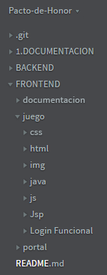

En esta página encontrarás la estructura de carpetas del juego con una breve descripción de cada una de ellas.
Usa el menú que se encuentra al lado derecho para navegar por las diferentes secciones.
Recuerda que puedes visitar la librería del juego aquí. Allí encontrarás cada función y cada variable utilizada en el juego.
